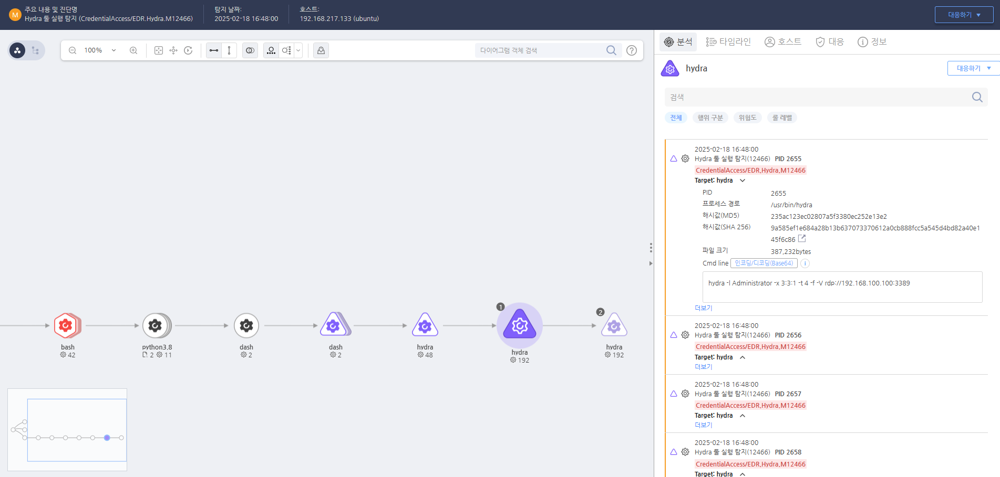

T1110.001.01 Administrator 계정명으로 RDP포트에 무차별 대입 공격 시도
D3FEND
MITRE ATT&CK 액션을 기준으로 대응 방안을 작성
Detection
다양한 프로토콜과 서비스에 대해 무작위 대입법으로 인증을 시도하는 비밀번호 크래킹(Password Cracking) 도구 사용을 탐지합니다.
Detection(EDR)

https://172.18.10.125:8903/#/analysis/alert/67b43cfe002dc6cd00000dd8
Response
노출된 계정의 비밀번호를 변경합니다.
Mitigations
다중 인증(MFA) 적용
- 비밀번호 외에도 추가적인 인증 요소(OTP, 보안 키, 생체 인증)를 요구하여 계정 탈취 위험을 줄입니다.
비밀번호 정책 강화
- 사용자에게 강력한 비밀번호 사용을 강제하고, 비밀번호 재사용을 방지하는 정책을 시행합니다.
자동화 공격 방어
- 로그인 시도 횟수를 제한하고, 일정 횟수 초과 시 계정을 일시적으로 잠급니다.
- 또한, CAPTCHA 또는 행동 기반 인증을 도입하여 자동화된 공격을 차단합니다.
이상 로그인 탐지 및 모니터링
- SIEM(Security Information and Event Management) 시스템을 활용하여 비정상적인 로그인 시도를 실시간으로 감시합니다.
Affected Techniques
Action 실행시 함께 영향을 받는 다른 Techniqes